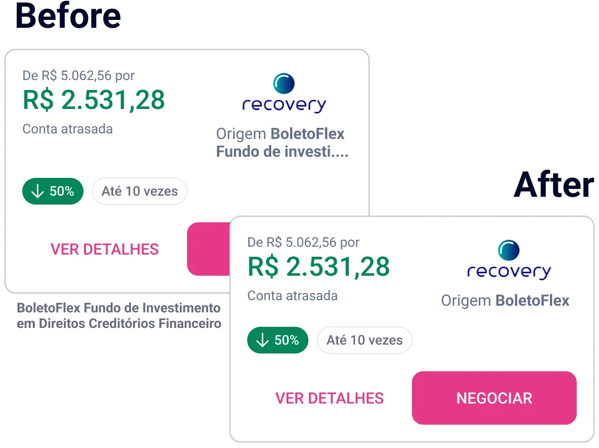
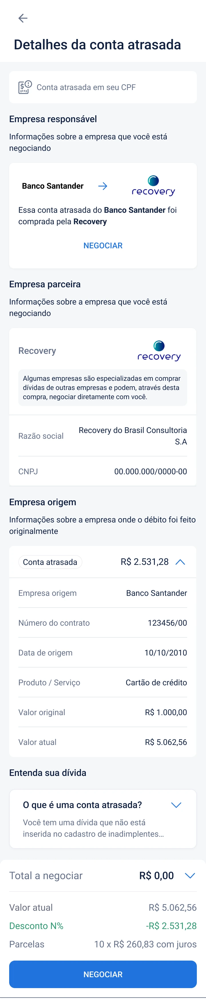
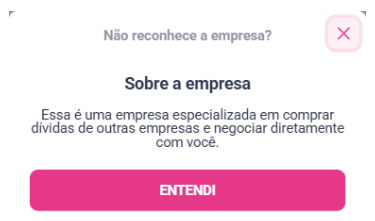

Unrecognized Debts
People were offered settlements for debts they did not recognize, owed to companies they had never heard of. I found the problem in a feedback dashboard I had built on my own, and it became the project.
My role
- Research and discovery
- led with full autonomy, 4 of 4
- A feedback dashboard I built on my own initiative, Hotjar surveys, support tickets and a second research wave.
- Definition and strategy
- led, with input from others, 3 of 4
- The root cause and the two fronts of work: writing and data.
- Design and systems
- shared the work, 2 of 4
- Shared with another designer on the squad; part of the final interface is his work.
- Delivery and measurement
- shared the work, 2 of 4
- A/B test and rollout with partners.
Problem
Nobody asked for this project. I built a dashboard, on my own initiative, to classify and monitor what users reported through feedback. One complaint kept coming back: people did not recognize the debts Serasa showed them.
| Complaints | 50.68% | |
|---|---|---|
| Compliments | 26.32% | |
| Errors | 20.00% | |
| Questions | 2.05% | |
| Other | 0.94% |
I need to know which company this debt originally came from.
I don’t know what this company I supposedly owe is.
I don’t know this debt. There’s no detail about what it is.
I didn’t understand anything.
The first goal was customer satisfaction: CSAT on the portal stood at 2.9 out of 5. Renegotiation depends on trust. People need to know a debt is theirs before they agree to pay it.
Surveys showed that 49.8% of users did not recognize the debt they were being offered, and 68% did not recognize the company behind it, especially securitization companies and telecoms. In a second research wave, the share of people who did not recognize the company rose to 73%.
| The company | 68% | |
|---|---|---|
| The amount | 36% | |
| All other reasons | <10% |
Support heard the same thing, in longer words.
I have a large debt in my name. The company Ipanema is collecting it, a company I don’t know, and I also don’t know the amount of this debt, since I never used my name for large deals. Please contact me for more information.
I have two debts in my overdue bills that I don’t recognize. One from Vivo for 30.26 that makes no sense: I’m on a Vivo family plan and the billing CPF is my father’s, never mine. Another from Claro for 786.90, and not even Claro can tell me what it is.
The root cause was in how debts were named. The portal showed the legal names partners had registered, such as “Itapeva XII Multicarteira Fundo de Investimentos em Direitos Creditórios NP”, instead of the brands people knew. Many debts had also been sold to securitization companies, and few people understood what those were or how they related to the original creditor.
Constraints
Debts reached the portal through a B2B platform run by a separate business unit, where partners registered their own names and logos. Nothing treated those names on the way: whatever a partner typed was what people saw.
Logos came from the partners too, in a quality defined by contract, and partners kept them up to date through the same platform. Every Serasa project also went through a legal review, and the legal name had to stay visible, both to identify the company and for legal reasons.
The design system had grown since my previous project, but it was still far from complete.
Decisions
We worked on two fronts at once: data, so the names people saw were the ones they knew, and writing, so the page explained who was collecting and why.
Brand names, fixed at the source
Business teams mapped the partners with unclear names and built a list from legal name to brand name, and the backend team updated them in the database. Every debt already arrived with a name and a logo, so there was no case of a debt without one. The work was making that name recognizable.

The current holder’s logo, the original creditor in words
The logo on the card belongs to the partner that holds the debt today. Showing the original creditor’s logo as well would have meant Serasa treating and maintaining images it did not own, and it would have opened room for irregularities. So the original creditor appears as text.
The legal name stays, with an explanation next to it
The legal name could not go, so the details page explains it instead. It says which company issued the debt and which one bought it, and what a company that buys debts does.

- The transfer, in one sentence. “This overdue bill from Banco Santander was bought by Recovery.” Who issued the debt and who holds it now, side by side.
- Sections that say what they are for. When a debt has been sold, the partner company and the original company each get their own section, with a line explaining it.
- What a securitization company is. “Some companies specialize in buying debts from other companies and can negotiate directly with you.”
A button to measure it, removed once it worked
At first, the explanation opened from a button, not a tooltip. A button click could be tracked with the tools we had; a tooltip could not. That gave us a signal built into the design: if the button was clicked about as often as the page was opened, the information on the screen was not enough on its own.
Once we confirmed that the explanation had reduced people’s doubts, we removed the button and left the explanation on the page, which made it cleaner. That is the version in the details page above.

Outcome
We A/B tested the changes with the largest securitization company for about a week. The sample size came from a standard calculator, based on the website’s monthly unique visitors, at 95 to 99% confidence and a margin of error of 5% or less. App analytics were limited at the time, so the website set the baseline.
Understanding was measured with an on-screen survey shown to people using the solution in production. In the test, the number of people who said they understood their debt rose by 23%. Feedback about unrecognized debts, tracked in the dashboard, fell by 59%. I left before the results of the full rollout were measured, including CSAT after the change.
- people who said they understood their debt, in the A/B test
- +23%
- feedback about unrecognized debts
- −59%
If I were measuring it again, I would compare CSAT before and after on the same scale, track clicks on “Don’t recognize the company?” against page views, and follow how many offers turned into agreements.
More work
-
Consent & Invitation Journey via WhatsApp
An informal WhatsApp channel with no opt-in became a consented journey designed around LGPD, written in three languages and made to be replicated.
-
Organizing Payments
A redesign of the agreements list so people could find what they owe and act on it. In testing, 78% located their overdue payments.